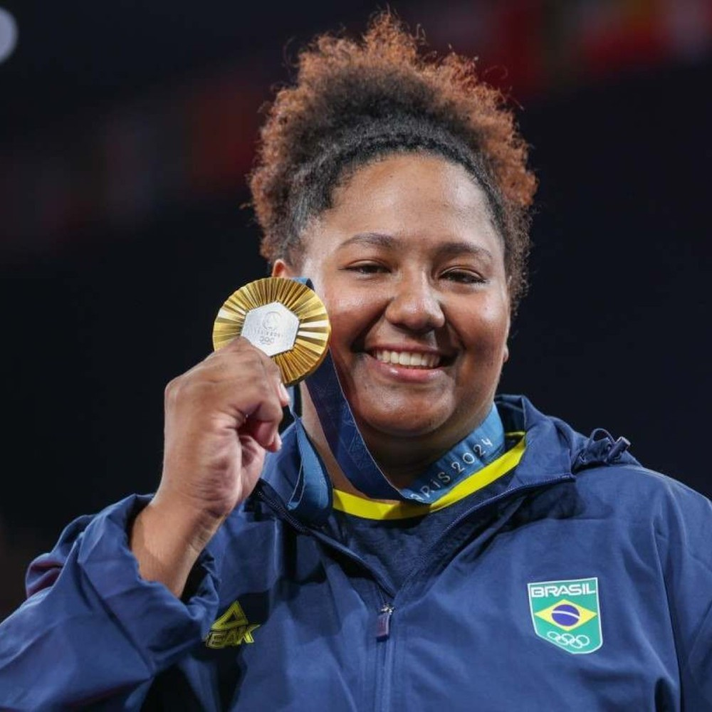
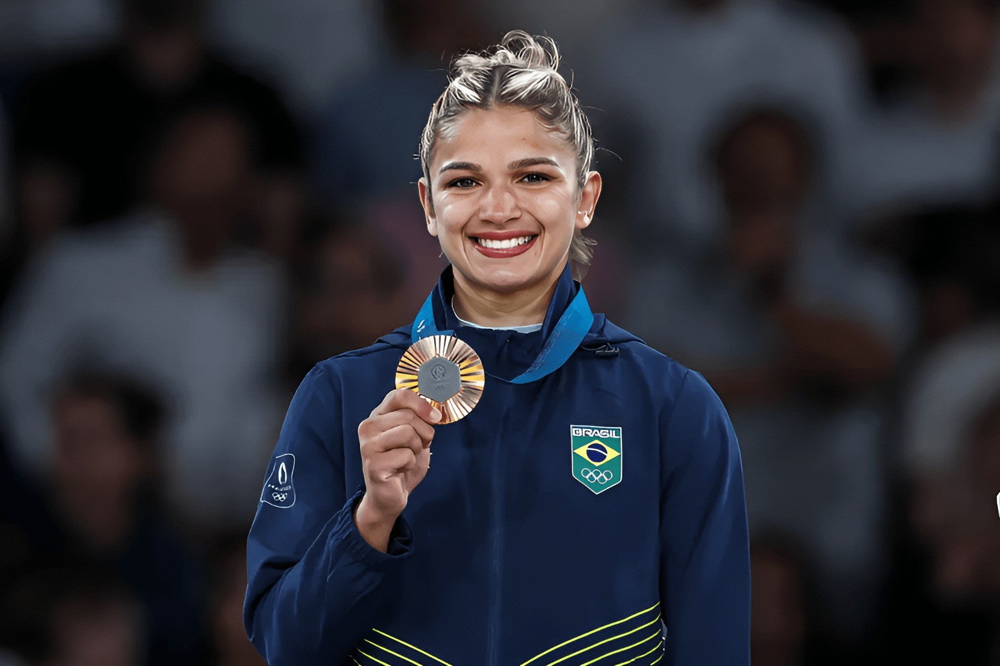

Judô é uma arte marcial praticada como esporte. Criada por Jigoro Kano em 1882, o judô é uma adaptação do jiu-jitsu, que tem por objetivo desenvolver técnicas de defesa pessoal, fortalecer o corpo, o físico e a mente de forma integrada. Foi considerado esporte oficial no Japão no final do século XIX.
O primeiro clube judoca na Europa foi o londrino Budokway. A vestimenta usada no judô é o judogi, de cor branca ou azul, sendo que o azul é mais utilizado em encontros importantes.
O judô tem grande aceitação em todo o mundo, um dos esportes mais praticados, e uma das únicas artes marciais disputadas nas Olimpíadas. Sua prática não é restrita somente a homens com vigor físico, estendendo-se também a mulheres, crianças e idosos.
Os judocas são divididos em duas categorias: principiantes (kiu) e mestres (dan). A cor da faixa utilizada na vestimenta indica o grau de aprendizado. Os principiantes usam, nesta ordem, faixa branca, azul, amarela, laranja, verde, roxa e marrom. Os mestres utilizam a faixa preta, a listrada de vermelho e branco e a vermelha.
A federação brasileira conquistou 4 medalhas neste esporte. Uma delas foi a conquista da medalha de bronz na disputa por equipes.
A outra foi a medalha de ouro, conquistada pela atleta brasileira Beatriz Costa.

A brasileira Larissa Pimenta conquistou a medalha de bronze no judo individual.

O atleta William Klein conquistou a medalha de prata no judo individual.